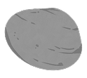

El niño, sin pensar, lanza una piedra y Pancho se
asusta, por lo que huye lo más rápido que puede.
asusta, por lo que huye lo más rápido que puede.
Corre sin mirar atrás y no vuelve.
Dejando de ser un lugar seguro para él
Dejando de ser un lugar seguro para él
